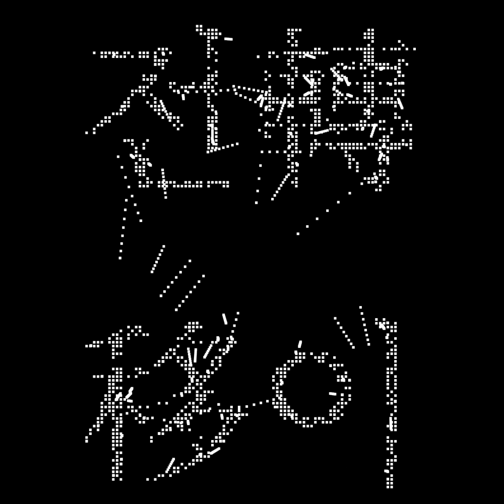
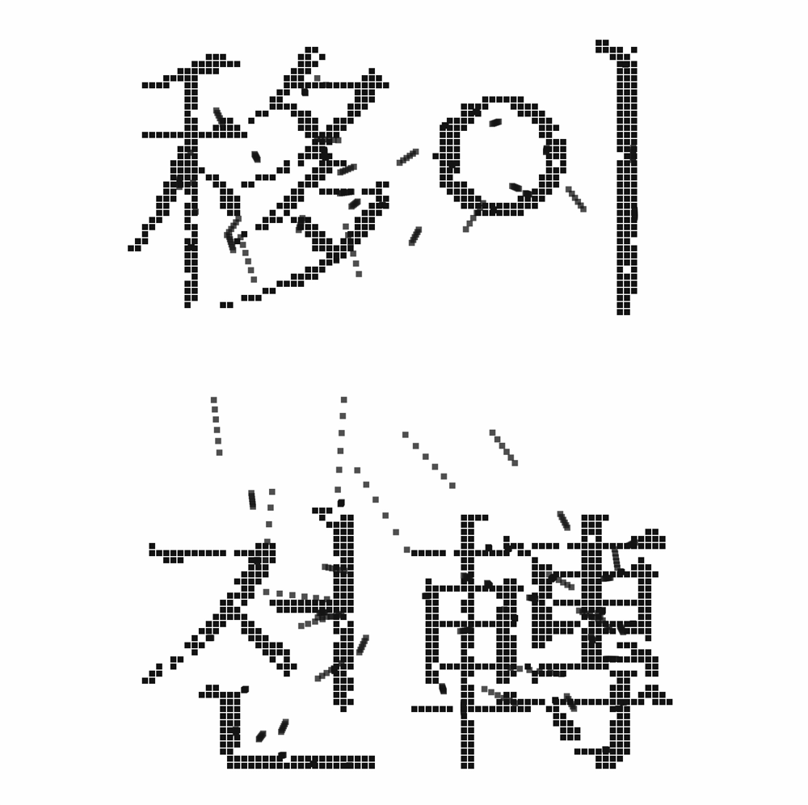
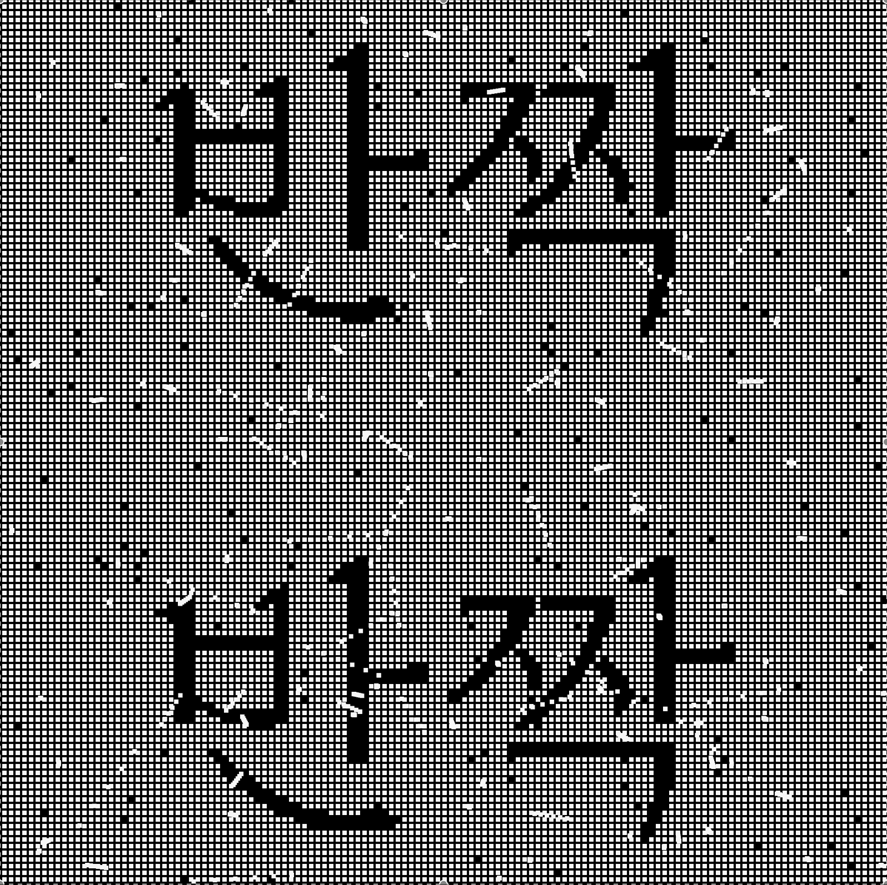

INTERACTIVE MEDIADESIGN
*이미지 클릭 시 링크로 이동



인터랙티브 미디어 아트
2023-2 인터랙티브 미디어 디자인 FINAL
전이(轉移), 이전(移轉), 빛(光)을 주제로 제작
loadPixels 함수로 캔버스의 픽셀 데이터를 불러온 후
무작위로 픽셀을 선택하여 이동효과를 표현
@arjunsarchive로부터 영감을 받고,
코드 작성에 도움을 받았습니다.
개인작업 | p5.js